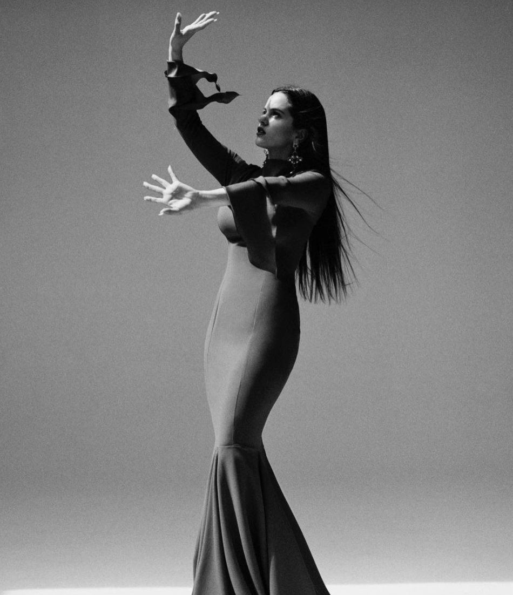

Rosalía Vila Tobella (born 25 September 1993), known mononymously as Rosalía, is a Spanish singer, songwriter, actress and record producer.Known for her modern interpretations of flamenco music, Rosalía crossed language boundaries after receiving praise from international influencers and after several collaborations with artists such as J Balvin, Pharrell Williams and James Blake. She began training with a renown teacher in Barcelona.
Rosalía discovered her power to thrill audiences while singing at the age of seven, fortuitously, when her father encouraged her to sing during a family lunch. When she opened her eyes after singing the coplilla, all the guests were crying.
She started to specialize in music at age 10 and at 13 she began to study it conscientiously. Her major training was at the Escuela Superior de Musica of Catalonia.
Among her influences she credits The girl of the combs, Diego el Cigala, Lole y Manuel, Camarón de la Isla, Isabelita de Jerez, Pepe Marchena, El Agujetas, Lola Flores, Enrique Morente, Carmen Amaya, Israel Galván, José Val del Omar, Pedro G. Romero, Leonard Cohen, Caetano Veloso, Héctor Lavoe, Chavela Vargas, Kendrick Lamar, James Blake, Sufjan Stevens, Pharrell Williams, Kanye West, Beyoncé, Pedro Amodóvar, Bach, Gaspar Noé, Marina Abramovic and Julio Cortázar.
Her second studio album, El mal querer, has not left anyone indifferent. Rosalía unveiled its release date with a giant ad in Times Square. It is divided into chapters that relate a toxic romance full of passion, jealousy, quarrels and liturgies that closes with the recovery of sanity and power.
For more information on her El mal querer album, visit her offical site, Rosalía.